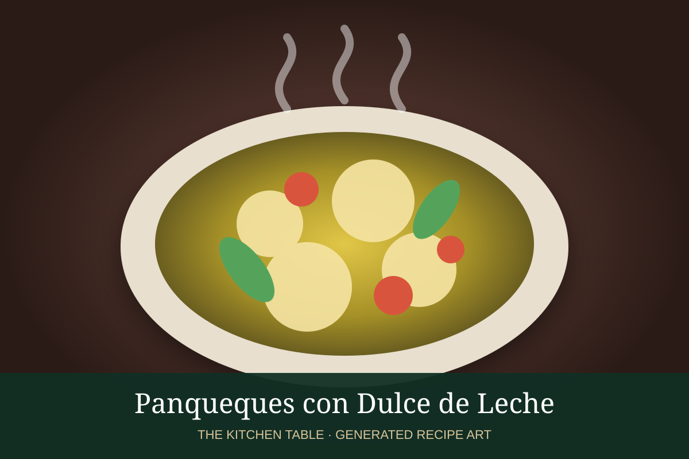

← Back to all recipes
DESSERT · ARGENTINIAN
Panqueques con Dulce de Leche
Thin Argentine-style pancakes rolled around warm dulce de leche and finished with powdered sugar.
30 minServes 6

Photo source: Buenos Aires Secreta.
Ingredients
- 1 cup all-purpose flour
- 2 large eggs
- 1¼ cups whole milk
- 2 tbsp unsalted butter, melted, plus more for the pan
- 1 tbsp granulated sugar
- Pinch of salt
- 1 tsp vanilla extract, optional
- 1½ cups dulce de leche
- Powdered sugar, for serving
Preparation
- Whisk flour, eggs, milk, melted butter, sugar, salt, and vanilla until smooth. Rest the batter 15 minutes.
- Heat an 8-inch nonstick skillet over medium heat and brush lightly with butter.
- Pour in a scant ¼ cup batter and swirl quickly to coat the pan in a thin layer.
- Cook until set and lightly golden, then flip and cook about 20 seconds more. Repeat with remaining batter.
- Spread each warm pancake with dulce de leche and roll into a cylinder.
- Dust with powdered sugar and serve warm.